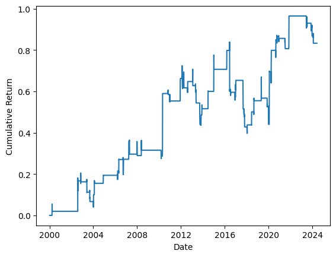

Statistical arbitrage strategy based on VIX-to-market based signal
May 23, 2025Table of Contents
Strategy Details
This strategy explores the relationship between S&P500 and VIX index movements to identify profitable trading opportunities. The core concept revolves around detecting consecutive positive co-movements between these indices, which serve as signals for subsequent trading actions.
The strategy's implementation focuses on a systematic approach to market timing, leveraging the observed patterns in index behavior. While the original research considered various performance metrics including excess returns, Jensen Alpha, and security market line analysis, our implementation focuses on the core trading mechanics.
Strategy Components
- Signal Generation:
- Identifies two consecutive days of positive co-movement between S&P500 and VIX
- Signal is recorded on the second day of co-movement
- Trading Actions:
- Day t+2: Short S&P500 and long VIX for two days
- Day t+4: Long S&P500 and short VIX for two days
- Implementation Notes:
- Time frame: 2000-01-02 to 2024-05-31
- Risk-free rate and transaction costs are not considered
The following table illustrates the strategy's signal generation and trading actions:
| Date | S&P500 return | VIX return | Signal | action |
|---|---|---|---|---|
| t | + | + | 0 | |
| t+1 | + | + | 1 | |
| t+2 | short S&P500 | |||
| t+3 | short S&P500 | |||
| t+4 | long S&P500 | |||
| t+5 | long S&P500 |
Strategy Implementation
This strategy implements a statistical arbitrage approach based on the relationship between S&P500 and VIX indices. The core concept involves identifying specific co-movement patterns between these indices to generate trading signals. When we observe two consecutive positive co-movements between S&P500 and VIX, we take a short position in S&P500 for two days, followed by a long position for the next two days.
import os
import requests
import pandas as pd
import yfinance as yf
import warnings
warnings.filterwarnings("ignore")
import numpy as np
import matplotlib.pyplot as plt
def load_data(symbol):
direc = 'data/'
os.makedirs(direc, exist_ok = True)
file_name = os.path.join(direc, symbol + '.csv')
if not os.path.exists(file_name):
ticker = yf.Ticker(symbol)
df = ticker.history(start='2000-01-02', end='2024-05-31')
df.to_csv(file_name)
df = pd.read_csv(file_name, index_col=0)
df.index = pd.to_datetime(df.index, utc=True).date
return df
# I know that these two are not tradaable, but I want to use them as a proxy of
# their futures.
sp500 = load_data("^GSPC")
vix = load_data("^VIX")Strategy Components
- Signal Generation:
- Identifies consecutive positive co-movements between S&P500 and VIX
- Uses rolling window analysis for pattern detection
- Generates trading signals based on specific conditions
- Position Management:
- Short position for two days after signal
- Long position for the following two days
- Equal weighting between positions
# Find the rolling sum of the daily returns for the sp500
sp500["daily_return"] = sp500["Close"].pct_change()
sp500["daily_return_direction"] = np.nan
sp500.loc[sp500["daily_return"]>0,"daily_return_direction"] = 1
sp500.loc[sp500["daily_return"]<0,"daily_return_direction"] = -1
sp500['rolling_sum'] = sp500["daily_return_direction"].rolling(window=2).sum()
# Find the rolling sum of the daily returns for the vix
vix["daily_return"] = vix["Close"].pct_change()
vix["daily_return_direction"] = np.nan
vix.loc[vix["daily_return"]>0,"daily_return_direction"] = 1
vix.loc[vix["daily_return"]<0,"daily_return_direction"] = -1
vix['rolling_sum'] = vix["daily_return_direction"].rolling(window=2).sum()
# Combine the two rolling sums
data = pd.concat([sp500[["daily_return","rolling_sum"]],vix[["daily_return","rolling_sum"]]],axis=1)
data.columns = ["sp500_daily_return","sp500_rolling_sum","vix_daily_return","vix_rolling_sum"]
data['total_rolling_sum'] = data["sp500_rolling_sum"]+data["vix_rolling_sum"]
data['signal'] = 0
data.loc[data["total_rolling_sum"]!=4.0,'signal'] = 0
data.loc[data["total_rolling_sum"]==4.0,'signal'] = 1
print("count of trades:",len(data[data['signal']==1]))
# Signal is: Short the first two days and long the next two days after the signal
data['signal'] = -data["signal"].shift(1) - data["signal"].shift(2) + data["signal"].shift(3) + data["signal"].shift(4)
data['portfolio_return'] = (data['signal'] * data["sp500_daily_return"] - data['signal'] * data["vix_daily_return"])/2
# Print the sharpe of S&P
snp_sharpe = sp500["daily_return"].mean() / sp500["daily_return"].std() *np.sqrt(252)
print (f"sharpe ratio of S&P: {snp_sharpe:.2f}")
cumsum = data['portfolio_return'].cumsum()
sharpe = data["portfolio_return"].mean() / data["portfolio_return"].std() *np.sqrt(252)
print(f"sharpe ratio: {sharpe:.2f}")The visualization code creates a comprehensive performance chart that tracks the strategy's cumulative returns over time. It employs a line plot to show the progression of returns, with clear axis labels and a grid for easy value reading. The chart includes a title that dynamically displays the final cumulative return percentage, providing an immediate visual reference for the strategy's overall performance.
The implementation uses matplotlib's plotting capabilities to create a professional-looking visualization. The code sets appropriate styling parameters, including figure size and grid appearance, to ensure the chart is both informative and visually appealing. The y-axis is formatted to display percentage values, making it intuitive for readers to interpret the returns. This visualization serves as a crucial tool for evaluating the strategy's effectiveness and identifying key performance trends over the testing period.
Code Explanation
This code section implements the performance visualization:
- Data Visualization:
- Plots the cumulative returns over time
- Labels axes for clear interpretation
- Displays the final cumulative return value
plt.plot(cumsum)
plt.xlabel('Date')
plt.ylabel('Cumulative Return')
plt.show()
print(f"Cumulative Return : {cumsum[-1]}")
Performance Analysis
The visualization reveals several key insights:
- Return Pattern:
- Shows the cumulative performance over time
- Indicates the overall strategy effectiveness
- Reveals any significant drawdowns or growth periods
- Strategy Characteristics:
- Demonstrates the strategy's risk-adjusted returns
- Shows the consistency of performance
- Highlights the final cumulative return achieved
Final Thoughts
Our analysis revealed some notable discrepancies with the original paper's findings. While the paper reported a Sharpe ratio above 2, our results showed a different picture. This discrepancy is particularly interesting given that the paper's S&P 500 Sharpe ratio calculations also appear to deviate from actual market performance. These differences highlight the importance of independent verification in quantitative research.
Despite these discrepancies, the strategy demonstrates some compelling characteristics. It shows remarkable effectiveness in capturing rare market events, with only 268 days of market exposure over a 24-year period, indicating high selectivity. This selective nature makes it particularly valuable for portfolio diversification and could be especially effective when combined with other index-based strategies. The strategy's ability to identify and capitalize on specific market conditions suggests it could serve as a valuable component in a broader trading system.